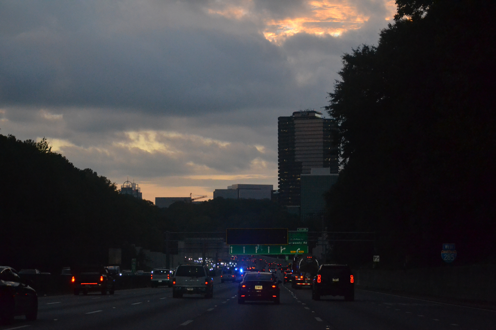

Perched right along the bustling corridor of Peachtree Street in the heart of Midtown Atlanta, Lil' Atlanta Café is a high-energy urban sanctuary that perfectly captures the neighborhood's sharp architectural flair and soulful stride. Floor-to-ceiling glass windows look directly past sleek high-rise facades and toward the historic Fox Theatre, flooding the industrial-chic space with concrete-toned light and offering the ultimate vantage point for sidewalk people-watching. The interior vibrates to the steady tempo of an indie-R&B playlist, balancing raw concrete styling with warm brass accents and lush indoor greenery that softens the city landscape. While Midtown professionals and nearby Georgia Tech students crowd the counter for a signature "Peachtree Pecan" nitro cold brew, others sink into low-slung chairs to sketch out design concepts or work remotely against the backdrop of Atlanta's iconic skyline.
Lil' Atlanta Café was founded by Maya Williams, an Atlanta native and Georgia Tech architecture alumna who wanted to capture the changing soul of her hometown in a single cup. After watching Midtown transform rapidly into a forest of sleek steel and glass high-rises, Maya felt the neighborhood desperately needed an anchor that preserved the city's rich cultural roots—particularly its legendary music scene and famous southern warmth. She stripped a vacant, industrial storefront on Peachtree Street down to its raw concrete pillars and built a bridge between generations, pairing a ultra-modern espresso bar with hand-selected vintage R&B concert posters, family-owned heirloom furniture, and a signature menu inspired by childhood summers spent baking pecan pies with her grandmother. Home